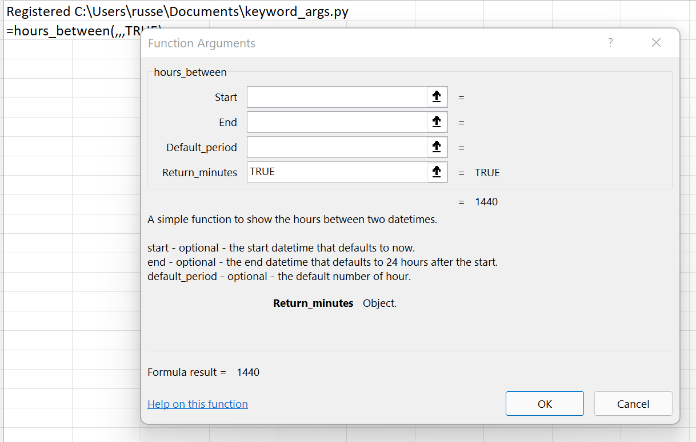
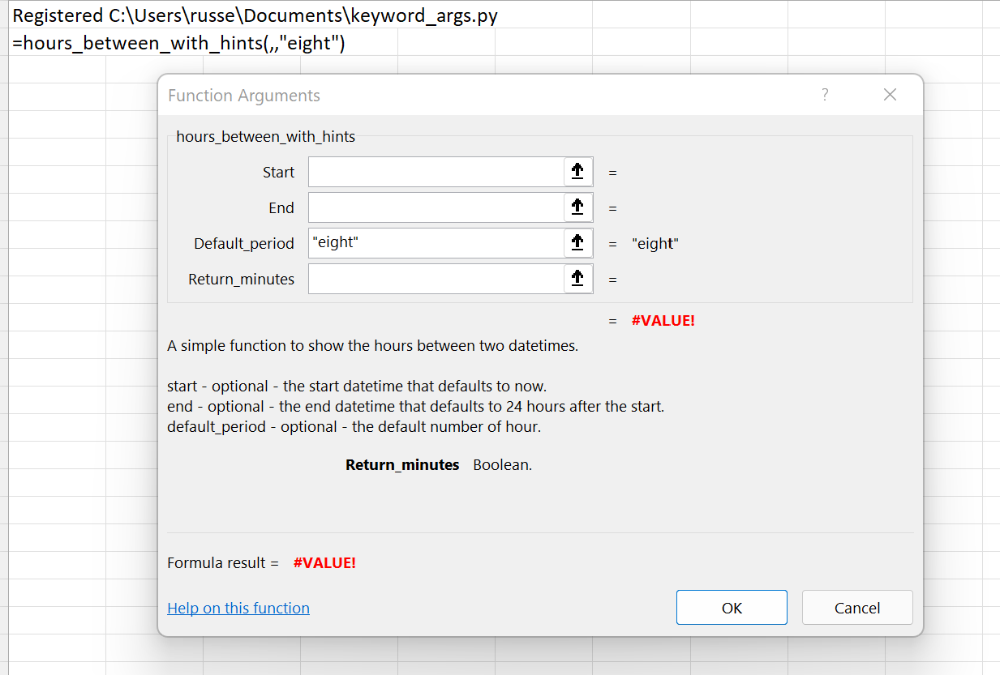

Optional arguments¶
xlSlim supports optional keyword arguments. This Python module that contains a function to calculate the number of hours between two dates. Every function argument is optional. As usual the code has no changes to support xlSlim.
from datetime import datetime, timedelta
def hours_between(start=None, end=None, default_period=24.0, return_minutes=False):
"""A simple function to show the hours between two datetimes.
start - optional - the start datetime that defaults to now.
end - optional - the end datetime that defaults to 24 hours after the start.
default_period - optional - the default number of hours to add to start if end is not supplied.
return_minutes - optional - return the result in hours rather than minutes.
"""
if start is None:
start = datetime.now()
if end is None:
end = start + timedelta(hours=default_period)
seconds = (end - start).total_seconds()
hours = seconds / 60.0 / 60.0
minutes = seconds / 60.0
return minutes if return_minutes else hours
Note
All the Python code and Excel files shown are available from github in the xlslim-code-samples repo. I highly recommend downloading the samples from github. The Excel workbooks contain many tips and tricks.
Save the Python code as a new file on your PC. I saved the file in my Documents folder.
Open Excel and enter this RegisterPyModule() formula (amending the location to match where you saved the file):
=RegisterPyModule("C:\Users\russe\Documents\keyword_args.py")
The function is now available to use in Excel. Play around with the inputs and you will see they are all optional and the defaulting works as expected.
{kind=link}
Hints and Doc strings¶
To make full use of xlSlim’s capabilities, use type hints and doc strings to provide more information about your functions.
Replace the kwargs.py code with this:
from datetime import datetime, timedelta
from typing import Optional
def hours_between_with_hints(
start: Optional[datetime] = None,
end: Optional[datetime] = None,
default_period: float = 24.0,
return_minutes: bool = False,
) -> float:
"""A simple function to show the hours between two datetimes.
start - optional - the start datetime that defaults to now.
end - optional - the end datetime that defaults to 24 hours after the start.
default_period - optional - the default number of hours to add to start if end is not supplied.
return_minutes - optional - return the result in hours rather than minutes.
"""
return hours_between(start, end, default_period, return_minutes)
And re-register the module in Excel:
=RegisterPyModule("C:\Users\russe\Documents\kwargs.py")
Now the function looks much better, with documentation and the correct types. Incorrect types are detected in Excel before calls are made to Python code.
{kind=link}